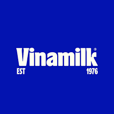

VIDEO SCRIPTING
- Bringing stories to life through dynamic and impactful scripts for various video formats.
MoMo TVC
Background: MoMo aims to raise awareness of the "Thổ Địa MoMo" feature during the Lunar New Year, encouraging users to explore it for finding the best dining spots and securing exclusive holiday deals.
Creative Solution: This TVC cleverly adapts the traditional Vietnamese children’s rhyme "Rồng Rắn Lên Mây," immersing viewers in the nostalgic experience of searching for their favorite Tet eateries. By highlighting the ease of discovering restaurants that remain open during the holiday and accessing special promotions, the ad invites users to explore "Thổ Địa MoMo" on the MoMo app.
MoMo TikTok 1
Background: MoMo’s "Refer a Friend" program incentivizes users to introduce the app to people who have never used MoMo before. Both the referrer and the new user receive rewards upon successful referrals.
Creative Solution: The TikTok clip taps into trending youth interests, presenting MoMo’s referral benefits through popular internet challenges and culturally relevant humor that resonates with the younger demographic.
MoMo TikTok 2
Background: MoMo’s "Refer a Friend" program incentivizes users to introduce the app to people who have never used MoMo before. Both the referrer and the new user receive rewards upon successful referrals.
Creative Solution: The TikTok clip taps into trending youth interests, presenting MoMo’s referral benefits through popular internet challenges and culturally relevant humor that resonates with the younger demographic.
Napas
Background: Napas seeks to increase awareness of its "Napas Quick Transfer" feature—a 24/7 interbank money transfer service available nationwide. The target audience consists of young users, including students with frequent online shopping and payment needs.
Creative Solution: A creative parody of the well-known Vietnamese folktale "Sơn Tinh - Thủy Tinh," featuring an unexpected twist that humorously emphasizes the speed and convenience of Napas Quick Transfer.
Hiruscar Post Acne
Background: Hiruscar Post Acne is a skincare gel targeting students and young adults, particularly female consumers, with an engaging and youthful approach.
Creative Solution: A recurring animated video series featuring two characters—Nàng Da, representing the consumer, and HiruPa, the personification of Hiruscar Post Acne. Their humorous daily interactions educate viewers on acne-related concerns and effective skincare solutions in a fun and relatable way.
Syngenta Vietnam
Background: Syngenta, a leader in agricultural solutions, aims to educate modern farmers about crop protection and yield improvement through digital platforms, particularly YouTube.
Creative Solution: Collaborating with well-known KOLs in the agricultural sector to create engaging, practical content that showcases real-life farming challenges and Syngenta’s effective solutions.
| Brand | Content | VIDEO |
|---|---|---|
| Background: These clients require corporate videos to communicate their brand identity, values, and key information to customers, business partners, and employees during significant events. | Watch Video | |
| Background: These clients require corporate videos to communicate their brand identity, values, and key information to customers, business partners, and employees during significant events. | Watch Video | |
|
|
Background: These clients require corporate videos to communicate their brand identity, values, and key information to customers, business partners, and employees during significant events. | Watch Video |
| Brand | Content | Fanpage |
|---|---|---|

|
Background:
Guardian collaborates with Jun Phạm to host a special livestream celebrating its 9th anniversary.
Alongside sharing insights about the brand, the livestream will feature exclusive discount offers to
encourage viewer engagement and drive sales.
Scope of Work (SOW): Develop a detailed script, including dialogues for the MC, host Jun Phạm, and interactive segments with guest appearances. Create strategic comment seeding scripts to boost engagement and attract more viewers during the livestream. |
Watch Fanpage |
|  | Background:
Vinamilk plans to launch a series of livestream sessions featuring KOLs and healthcare experts,
focusing on "Mother & Baby" topics. The objectives include:
Educating parents on early childhood care and parenting essentials.
Providing expert guidance on optimal baby care practices.
Showcasing Vinamilk’s nutritional products and highlighting their role in a child’s development.
SOW: Develop a content plan outlining key livestream topics for the month. Prepare structured Q&A sessions, collaborating with healthcare experts to ensure informative and credible responses. Craft a comprehensive script for each livestream session. Design strategic comment seeding plans to drive engagement and enhance viewer participation. |
Watch Fanpage |